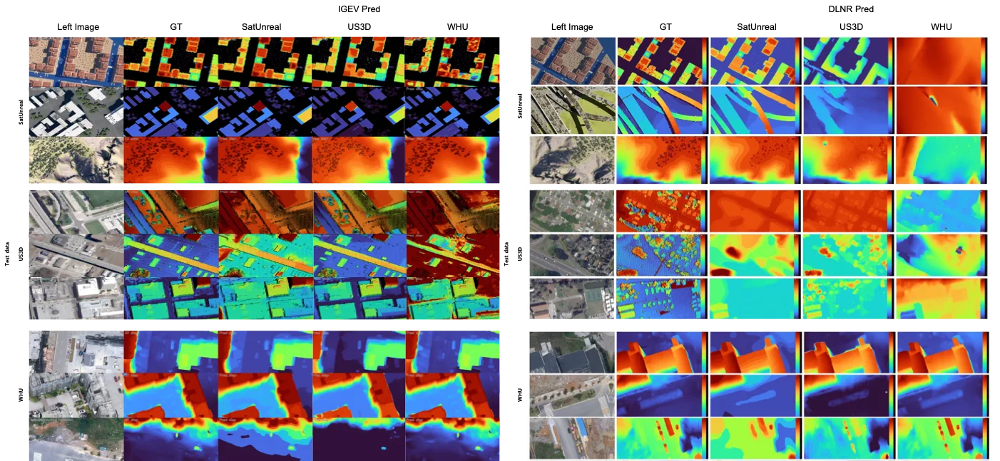
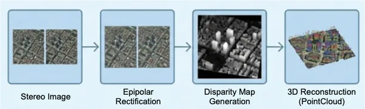
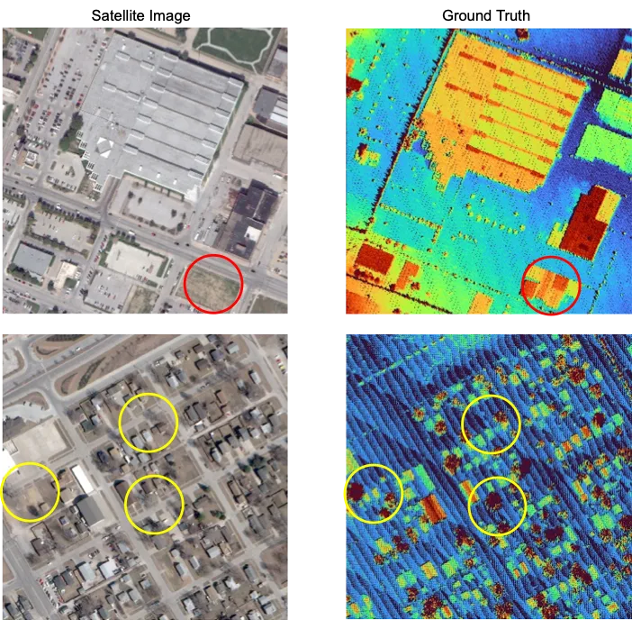
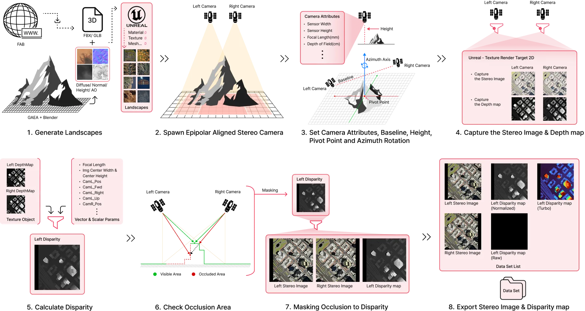
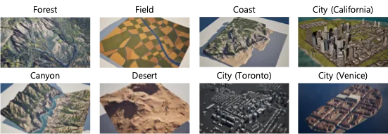
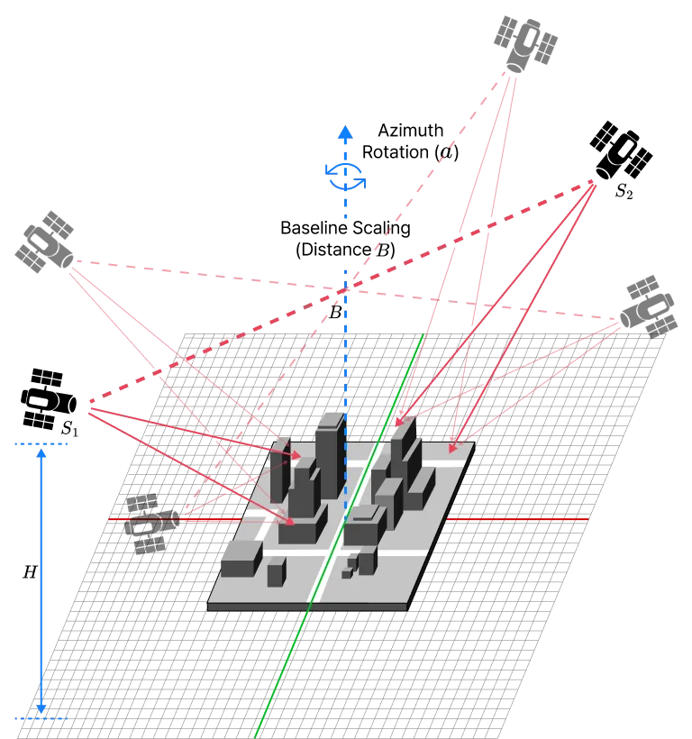

SatUnreal：面向卫星立体匹配的 Unreal Engine 高精度合成数据集
SatUnreal: A High-Precision Synthetic Dataset for Satellite Stereo Matching via Unreal Engine
把卫星轨道几何与遮挡标签做成物理可控的监督信号，证明“合成几何监督”可以零样本迁移到真实卫星立体匹配基准，并以 10,000 对规模与真实数据集对齐比较。
dataset size
EPE on US3D
作者、单位与技术谱系 · Research context
作者与单位
研究脉络
- US3D / WHU-Stereo方法基座（对照基准）关系：被本文用作对照的真实数据基准与问题来源[arXiv 官方 HTML v1]
- RAFT-Stereo、IGEV、Selective-IGEV、DLNR上游方法（骨干网络）关系：被复用而不被修改的立体匹配架构[arXiv 官方 HTML v1]
- SynRS3D、SkyScenes、UnrealStereo4K、WMGStereo上游方法（合成数据路线）关系：同族合成数据管线，本文指出其不适配卫星几何[arXiv 官方 HTML v1]
- SatUnreal（本文）本篇推进关系：以 UE 仿真加两步 linetrace 生成严格遮挡标签，并加入基线旋转采样[arXiv 官方 HTML v1]
合作网络
- 作者团队与代码/数据发布地址论文作者（TelePIX） → github.com/jmp-Telepix/SatUnreal_...关系：论文声明的代码与数据集发布地址[arXiv 官方 HTML v1]
- SatUnreal ↔ US3D / WHU-StereoSatUnreal（训练域） → US3D、WHU-Stereo（测试域）关系：交叉数据集评测[arXiv 官方 HTML v1]
- SatUnreal ↔ SceneFlowSceneFlow 预训练权重 → 三个立体匹配骨干关系：明确技术依赖[arXiv 官方 HTML v1]
- 城市三维资产来源Procedural World Lab、GEOPAGO（Fab Marketplace） → SatUnreal 城市化子集关系：外部授权资产依赖[arXiv 官方 HTML v1]
作者块、单位与同等贡献信息来自 e-print 作者页；技术接续来自正文对 US3D、WHU-Stereo、RAFT-Stereo、IGEV、SynRS3D 等的引用与实验设置。除论文署名与公开市场资产来源外，未发现公开证据支持的师生或机构合作关系，相关推断不作补写。
方法本质拆解 · What actually changed
是不是微调？
不是修改网络：三个骨干都用 SceneFlow 预训练权重初始化后微调 50k iterations，架构与推理链路不变；被改变的是训练数据的监督质量与规模（10,000 对，6,646/500/2,854 划分），权重更新方向因此由合成几何标签主导。
有没有额外约束？
两处硬约束作用在监督与评测上：遮挡区被 linetrace 写成严格二值掩膜、非重叠区以零值编码，训练时只对 d>0 的像素计算损失；评测时把零填充区动态裁剪并归一化视差尺度，以对齐真实数据集预先裁剪的协议。
推理/后端到底做了什么？
没有新后端：推理仍是各骨干原生的迭代视差更新，没有额外优化、后处理或全局平差；SatUnreal 的全部作用发生在训练数据侧，推理成本与对应基线完全相同。
方法本质是什么？
把监督信号从“带时相错配与 LiDAR 稀疏误差的真实观测”换成“由相机参数直接算出的几何加遮挡标签”，让网络学几何对应而不是学光度域噪声；代价是仿真高度与大气近似带来的辐射域差，需要真实域微调或更强大气建模来补齐。
输入=虚拟场景与受控轨道几何；改变的位置=训练数据与损失掩码而不是网络；动作=二值遮挡掩膜、有效性掩码、基线与方位角采样；效果=合成监督可零样本迁移到 US3D/WHU 并在部分组合上优于真实自训练。

桥接价值Bridge
桥接价值
今日唯一直接落在“底层几何”的论文，而且它把卫星立体匹配的瓶颈归因于监督信号质量而非网络结构，因此交付物是可替换的数据与损失掩码管线。作者用严格核线纠正、非重叠区置零加 d>0 有效性掩码、冻结光照与动态物，把“几何”从“外观”里剥离出来，这与我们在 GNSS/INS 与视觉融合中把观测误差拆成几何项与噪声项的诉求同源。它还明确指出近年基础模型在近正交卫星几何下表现受限，说明域特定的几何监督仍有独立价值。
方法与模块Method
方法摘要
网络侧不改造：RAFT-Stereo、Selective-IGEV、DLNR 都用 SceneFlow 预训练权重初始化，只微调 50k iterations。数据侧用 UE 做平地近似，把轨道高度缩放为 1 km、以 0.3 m GSD 的航空相机参数作为代理，保持 B/H 与窄 FOV，基线 50–200 m 取 20 档、方位角 ±90° 内取 20 档，25 个 pivot 点共 10,000 对（城市化 8,000 对、自然地形 2,000 对），划分 6,646/500/2,854。标签侧由引擎 VP 矩阵反投影再投影得到亚像素视差，再用两步 linetrace（左相机射线求交，再由交点向右侧相机反向射线检测遮挡）给出严格二值掩膜，训练时只对 d>0 的像素算损失。
可迁移模块
① 用引擎几何参数直接生成亚像素标签，而不是估计标签；② 二值遮挡掩膜加有效性掩码参与损失，可移植到任何多视图或深度估计训练里，专门排除不可观测区；③ 基线/方位角离散采样作为观测几何的受控变量，可用于评测估计器在交会角与航向变化下的退化；④ “先在零污染监督上训练、再迁移到真实域”的协议，可直接作为我们做合成-真实混合训练时的对照臂。

证据Evidence
关键证据与数字
Table 2：RAFT-Stereo 只用 SatUnreal 训练，在 US3D 上零样本 EPE 2.45、1px 48.83、3px 86.87，而用 US3D 自训练的同架构在 US3D 上是 EPE 11.76、1px 38.60；在 WHU-Stereo 上只用 SatUnreal 训练得到 EPE 1.40、1px 87.48，WHU 自训练为 EPE 0.19、1px 97.66。自一致性上 DLNR 只用 SatUnreal 训练在 SatUnreal 测试集 EPE 0.26、1px 93.74，RAFT-Stereo 为 EPE 0.57、1px 90.78。反例同样明确：Selective-IGEV 用 SatUnreal 训练后在 US3D 上 EPE 60.89、1px 19.33（作者解释为高容量模型对真值空间错配敏感，局部大误差抬高全局 EPE），同模型在 WHU 上为 EPE 0.93、1px 88.44。
边界与下一步Limits & Next Step
边界与风险
① 仿真高度 1 km 与真实约 500 km 的差异把大气柱压缩进 1 km，作者承认存在辐射域差；② 推扫式传感器的非线性核线被分段线性近似替代；③ 只做零样本评估，未在真实数据上微调，上限未知；④ 10,000 对规模是作者为保证与基线公平对比而设，并非管线上限；⑤ 摘要给出的数据与代码仓库地址尚未核验可访问性，标为待核验。
下一步实验
① 把遮挡掩膜加有效性掩码的损失写法搬到我们的多视图/深度估计训练里，做一次“有无掩膜”的最小 A/B；② 在自采城市数据上复现“合成预训练→真实零样本”与“真实自训练”两条线，并做交会角/基线的灵敏度扫描；③ 补它没做的部分：真实域微调、动态光照与大气散射、负高程支持，这些是接入实际测绘与定位管线的必要条件。
{kind=link}

{kind=link}

{kind=link}

{kind=link}
